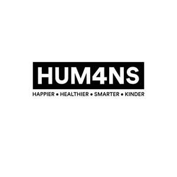

Trade Mark Journal No.2025/022 30 May 2025
UK00004197813 1 May 2025 (9,16,21,25,35,38,41)

- Class 9
- Downloadable e-books, audiobooks, and digital journals; downloadable training materials, including recorded courses and webinars. .
- Class 16
- Books; Challenge Journals; Printed Materials; Printed publications; Workbooks; Challenge journals for self-improvement and goal setting; Educational manuals, guides, and instructional materials related to leadership and coaching; .
- Class 21
- Mugs; Drinking vessels.
- Class 25
- Clothing; Footwear; Headgear.
- Class 35
- Business consultancy relating to leadership development and business growth; Business networking services; Membership services for business professionals including networking.
- Class 38
- Broadcasting and streaming of audio, video and multimedia content; podcast transmission services; webcasting services; live streaming of seminars, workshops and educational events; transmission of digital content via telecommunications networks; provision of access to online platforms, forums and databases for the dissemination of educational and motivational materials; electronic transmission of instructional content and learning resources; transmission of messages, images, audio and data via mobile and digital applications; providing access to video-on-demand and subscription-based content services.
- Class 41
- Educational services; conducting courses, seminars, and workshops in leadership development; Personal and professional coaching services; Life coaching services in the field of personal development; Online training courses; provision of online educational content; organising virtual and in-person conferences; Business mentoring services; leadership development training; organisation of business events for leadership training; Membership services for business professionals, including coaching and training.
HUM4NS LTD
Representative: Robertson IP